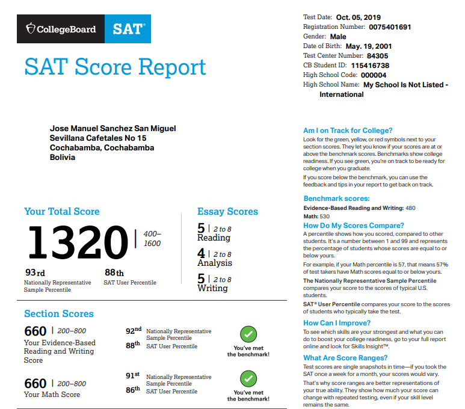

Egreso del la unidad educativa "Colegio Tiquipaya", el colegio Tiquipaya fue fundado el año 1991. Es conocido por dar una eduación integral bilingüe.

El examen sat es un exam internacional en ingles creado por "College board", este este hecho para calificar estudiantes de forma pre-universitaria, la nota de 1320 representa el mejor 7% de las notas.
Clases de chino tomadas de forma virutal, a travez de coursera, en la universidad de "Shanghai Jiao Tong Univerty."
Power Bi es una herramienta creada por Microsoft, esta es usada para la visualización de datos.

C++ es un lenguaje usado para la creación de software principamente, a pesar de su edad todavia es muy usado por su rapido tiempo de compilación.

Sql es un lenguaje relacional para bases de datos.
HTML es el lenguaje que estructura las paginas web, este es aceptado por todos los navegadores.